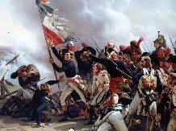
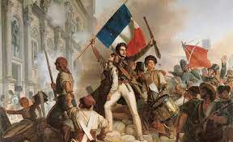

A Revolução Francesa foi o ciclo revolucionário, ocorrido entre 1789 e 1799, responsável pelo fim dos privilégios da aristocracia e pelo término do Antigo Regime. A Queda da Bastilha aconteceu em 14 de julho de 1789 e foi o marco que espalhou a revolução pela França.
A Revolução Francesa foi resultado da crise econômica, política e social que a França viveu no final do século XVIII. Essa crise na França foi consequência direta de uma sociedade marcada pela desigualdade típica do Antigo Regime, nome pelo qual ficou conhecido o absolutismo na França. A França do final do século XVIII era governada por Luís XVI.
A sociedade francesa era dividida em três classes sociais:
Primeiro Estado: clero
Segundo Estado: nobreza
Terceiro Estado: restante da população que não se incluía nos outros dois Estados
Dentro dessa organização social, existia uma divisão muito clara, pois clero e nobreza eram classes que compunham a aristocracia e que gozavam de uma série de privilégios, como isenção de certos impostos e direito de cobrar taxas por suas terras. O Terceiro Estado, por sua vez, mantinha todo o peso de arcar com as despesas do governo francês. Além disso, essa classe era extremamente variada, pois incluía grupos bastante diferentes, como burgueses e camponeses.
A grande desigualdade social da França foi a raiz que causou a convulsão que iniciou a Revolução Francesa. É importante também não ignorar a insatisfação da burguesia, que queria combater os privilégios da aristocracia como forma de prosperar seus negócios no país. Isso convergiu para a revolução em 1789.
Na segunda metade do século XVIII, a França sofria as consequências de seu atraso econômico (em comparação com a Inglaterra) no desenvolvimento do capitalismo e dos altos gastos do país. Tentativas de reforma econômica aconteceram naquele século, mas fracassaram, pois esbarraram na resistência do clero e da nobreza, que não queriam abrir mão de seus privilégios.
Os gastos desnecessários também eram um dos grandes males do país, sobretudo aqueles relacionados com guerras desnecessárias, como a Revolução Americana. Esses fatores endividaram bastante o governo e destruíram a economia francesa.
A crise econômica que se instalou na França impactou diretamente as relações sociais no país, pois a nobreza, tentando reduzir os impactos da crise em seu estilo de vida, aumentou a exploração sobre o povo. Dessa forma, os camponeses e a classe média francesa, principalmente, foram prejudicados. Isso aconteceu porque a nobreza passou a ocupar cargos de governo que, usualmente, eram ocupados pela classe média e porque os impostos cobrados dos camponeses aumentaram.
Essa situação gerou um grande impacto, principalmente, sobre a renda dos camponeses, grupo que já vivia uma situação delicada. O aumento dos impostos fez com que os camponeses abrissem mão de uma parcela cada vez maior da sua produção, utilizada basicamente para sua subsistência. Isso fez com que o estilo de vida dos camponeses piorasse bastante nos vinte anos anteriores à Revolução Francesa.
Os gastos elevados do governo francês também eram um problema grave. No final do século XVIII, a França gastava metade de seu orçamento anual para o pagamento de dívidas do Estado. Um dos resultados mais pesados da crise econômica sobre o povo foi a alta da inflação e, consequentemente, o aumento do custo de vida. Como a situação em 1789 era delicada, o rei francês optou por convocar os Estados Gerais.

Os Estados Gerais eram uma espécie de assembleia emergencial convocada pelos reis franceses para tomada de decisões importantes. Os últimos Estados Gerais tinham sido convocados há mais de 150 anos. Embora a aristocracia francesa esperasse que medidas fossem tomadas, desejava que a assembleia convocada em 1789 mantivesse os privilégios aristocratas.
A convocação dos Estados Gerais coincidiu com um momento de grande mobilização popular em Paris. Essa mobilização foi resultado direto da insatisfação popular com a fome, que havia aumentado por conta das colheitas ruins de 1788. Em decorrência disso, o preço do alimento disparou, fazendo com que muitos não tivessem condição de comprar alimentos suficientes.
Com a fome espalhando-se pelo país, as pessoas mais pobres eram jogadas para a rebelião ou para o banditismo. Essa situação fez com que as camadas populares de Paris enxergassem os Estados Gerais como uma forma de melhorar a situação.
As decisões dos Estados Gerais eram realizadas por meio de uma votação, na qual cada estado tinha direito a um voto. Esse mecanismo permitia a união entre nobreza e clero contra o Terceiro Estado e, assim, garantia a permanência de seus privilégios. Os representantes do Terceiro Estado, por sua vez, sugeriram que o voto fosse individual, não por Estado. Com isso, o Terceiro Estado teria a possibilidade de ameaçar os interesses da nobreza e do clero.
A proposta do Terceiro Estado pelo voto individual foi rejeitada pelo rei, o que motivou seus a romper com os Estados Gerais e a formar uma Assembleia Nacional Constituinte a fim de que uma nova Constituição fosse redigida para a França. A insatisfação popular tomou as ruas quando o rei mostrou-se contrário à Constituição e ordenou o fechamento da Constituinte.
No dia 14 de julho de 1789, os sans-culottes (camadas populares de Paris), enfurecidos, resolveram atacar a Bastilha, prisão que abrigava presos políticos do absolutismo. Apesar de, naquele momento, a Bastilha estar quase desativada, continuava sendo um grande símbolo do absolutismo. A população parisiense conseguiu tomar a prisão. Essa ação é considerada pelos historiadores como o grande marco que iniciou a Revolução Francesa.
